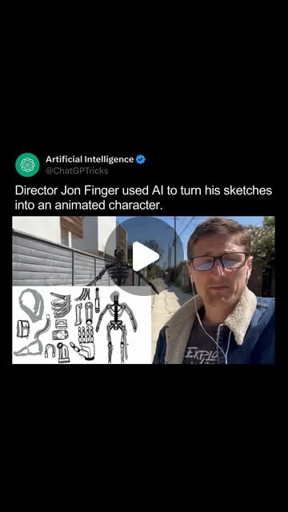
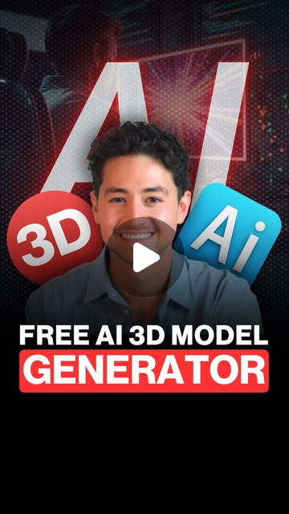

creative_fusion
Napkin Sketch → Production Asset: The 5-Tool Creative Pipeline
A hand-drawn sketch can become a production-ready 3D animation in under an hour by chaining Procreate → Magnific AI → 3DAI Studio → Move AI → final render. Each tool handles one transformation step.
3DAI Studio · ChatGPT · Hunyuan3D · Hunyuan3D-2 · Kling · Magnific · Magnific AI · Midjourney · Move AI · Procreate · Tencent
Try It — Action Sketch
Draw in Procreate → upscale with Magnific → generate 3D mesh with Hunyuan3D or 3DAI → capture motion with Move AI → composite with Kling or Runway. Total time: ~45 minutes per asset.
Prerequisites: Procreate or any drawing app, Magnific AI, Hunyuan3D-2 or 3DAI Studio, Kling or Runway account
Connected Posts (4)

Sketch-to-3D-anim pipeline — Procreate + Magnific + 3DAI + Move AI
Director Jon Finger's pipeline: Procreate sketches -> Magnific AI style transfer -> 3DAI Studio for 3D models -> Move AI for mocap -> Cinema 4D for render. Concrete multi-tool AI animation workflow.

Kling Motion Brush — direct up to 5 characters in one AI video
@realrileybrown on Kling's Motion Brush: select up to 5 characters/objects in a starting image (often Midjourney-generated) and draw motion paths to animate them. One of the sharpest controllable video-gen workflows at the time.

Hunyuan3D-2 — Tencent's free image-to-3D model generator
Tencent's Hunyuan3D-2 turns text or an uploaded image into textured 3D models in seconds. Free web UI; pipeline is upload > Generate Shape > Generate Textured Shape > download. Good for game/app asset workflows.
Read Guide →

AI rotoscoping — mask yourself into your own animations
@iamfesq demos using an AI detection/segmentation model to auto-rotoscope a mask of himself for compositing into his animated art. Quick technique reference for AI-assisted rotoscoping.
Deeper Dive generated 2026-04-22T13:11:12.747375 · Curated by Claude for Gabe (@6ab3) · dejaviewed.com